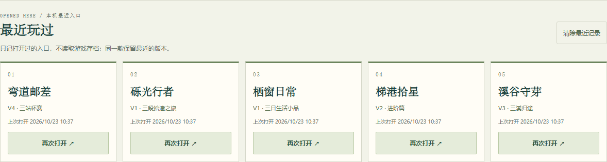
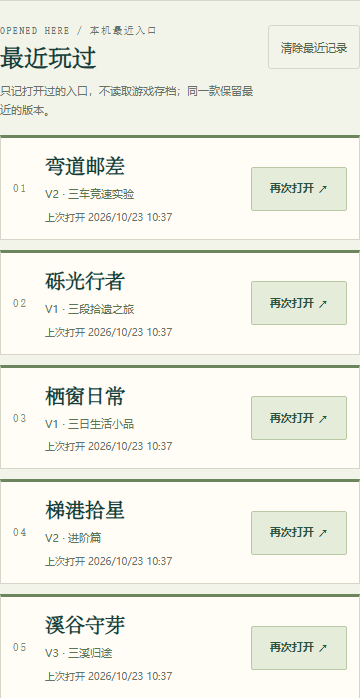

回到上次打开的那个版本。
首页在有记录后显示“最近玩过”，最多五款、按最近排序；同一款只保留最后实际打开的版本。卡片显示游戏名、版本/篇章和本机打开时间，按钮统一为“再次打开”。这份列表不读取或判断游戏存档，不承诺从上次场景继续，也没有跨设备同步或记录上传。
控制器成功加载、游戏页面实际可见后才记录。点击首页链接、打开介绍/报告或控制器未加载不会产生访问记录。记录仅接受静态白名单内的同站游戏入口，不能写入外部、脚本或未知地址。
使用与清除
本地键为 classic-games-atlas:recent-play:v1。清除按钮会先确认，默认聚焦“保留记录”；取消或 Esc 不改数据。确认只删除这一个键，不删除游戏存档、纪录、声音设置或目录返回凭据。无法清除时明确保留列表并提示，不虚报成功；存储不可用时不显示空壳，首页与游戏继续可用。


必要验证
精简证据包含十组纯存储/安全/返回凭据测试、普通 UI 跨页流程与六个明确故障场景。六款实际打开后上限五项，旧版→新版→原目录版的替换、首页刷新、报告排除、最近卡片与原目录键盘返回、筛选、焦点、位置及 hash 介绍均通过。取消和确认清除时，其他八个本地键保持原字节。
首次出现最近区块会改变目录高度，返回凭据因此附带原链接的屏幕位置；390 CSS 新区块首次出现后的返回误差约 0.34 像素。桌面 1440 CSS 与窄屏 390 CSS 截图检查无横向溢出，按钮可键盘到达。正常流程无控制台错误或资源 404。
故障夹具与普通 UI 分开记录：控制器请求中断、完全禁用本地存储、最近列表写入配额失败、恢复后再次正常打开、清除失败后恢复、可选最近模块网络失败。没有注入访问列表或胜负来冒充普通操作；故障种子来自此前正常访问的本地记录。
当前 45 款的 98 个非封存游戏入口只增加同一记录器加载标签；控制器、玩法、关卡、素材和游戏存档格式未改。38 个 versions/v1/ 封存镜像保留原字节，不自动记入本轮最近列表。现站的原版 games/、preview/ 及后续版本入口可以记录。停止开发或保留阶段作品仅按访问显示对应状态，不恢复开发，也不标为精品完成。
98 项接线与相对路径做静态核对，普通 UI 只抽取代表入口，不等于逐款游戏验收。390 CSS 是桌面浏览器尺寸模拟，实体手机和真人体验未验。目录仍 45 项，经典图鉴仍 72 条。
可重跑：node tests/play-recent.test.mjs。